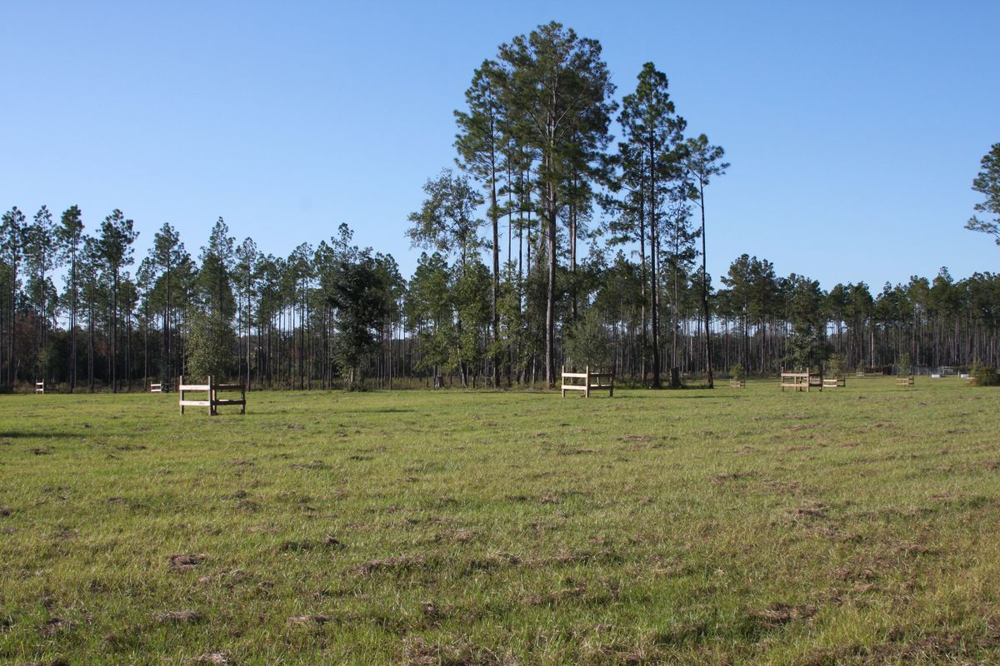
$1,000,000
The land
Exercise the option on the Petty Farm: 126 acres and 135 unbroken years of harvest. Everything that follows grows out of this.
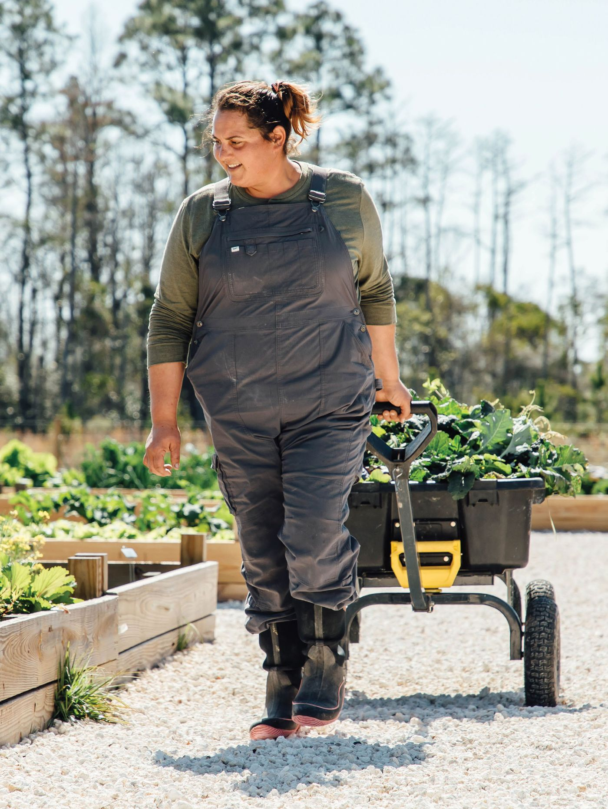
Shelters and feeding ministries run on donated food, and the donors who provide it are generous. But most of what can be donated at scale is shelf-stable by necessity: canned, boxed, and processed to last on a pantry shelf. Fresh protein and produce rarely make it to a shelter kitchen.
“Homeless shelters get a lot of donated food, which is wonderful, but it's not always the healthiest food. A lot of it is processed.”
Rob Carryl, Board Chair, Trinity Rescue MissionSo a woman arriving at Trinity with an addiction to overcome, a job to find, and children to tend is served, three times a day, a diet least able to support any of it. Highly processed food is associated with worse outcomes in exactly the conditions that keep people from stabilizing: depression, anxiety, diabetes, hypertension, inflammation and the volatile energy that makes early recovery harder than it already is.
We are feeding people without nourishing them. That gap shows up as relapses, missed shifts, emergency room visits and returns to the street.
Homelessness creates a destructive cycle for the women in our community. Unhealthy, codependent and abusive situations play a huge role in the oppression of women, leading to homelessness and one of the darkest industries, human trafficking. Trinity Rescue Mission exists to end that cycle.
Trinity Rescue Mission has run a residential, land-based recovery program in St. Johns County for men since 1970. Men who complete Lifeline can move onto a working farm and rebuild in a place with sun, structure and something growing because of their hands.
In 56 years, there has never been an equivalent for women.
“We've done it successfully in St. Johns County for our men. And now, through the generosity of the folks around The Farm at Okefenokee, we have an opportunity to do that, the very same program for the women.”
Pastor Tom Messer, Trinity Baptist Church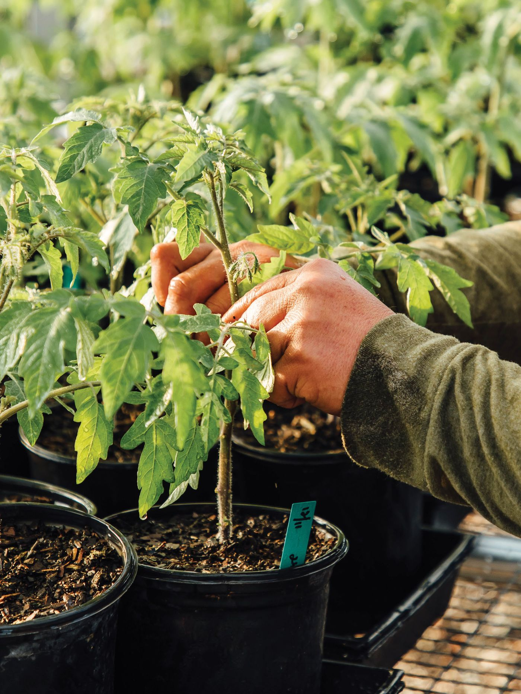
Fresh protein and produce are nearly impossible to source at that scale.
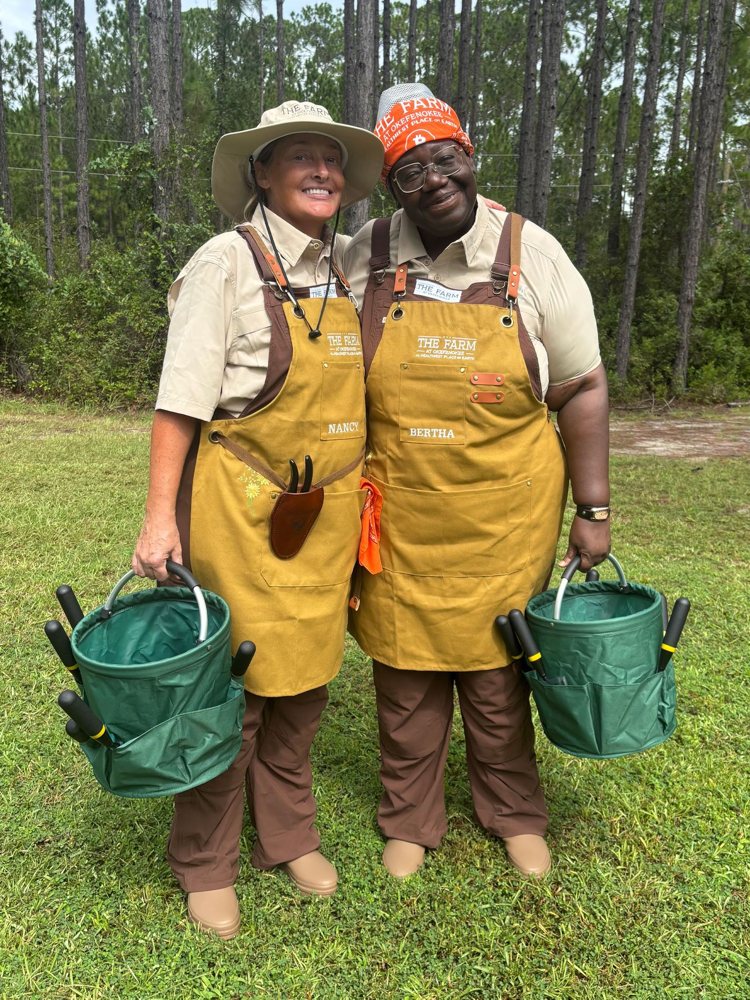
Women from Trinity Rescue Mission have been learning to farm at The Farm at Okefenokee on roughly one acre.
“The Trinity ladies come out here and work in the garden, four days a week. They make money by working in the garden, but they also see where their food comes from. And the chefs at Trinity Rescue Mission get access to fresh food, and they're excited.”
Jeff Meyer, Co-Founder, The Farm at OkefenokeeFrom that single acre, so far: more than 30,000 meals of fresh vegetables, carried back to Trinity Rescue Mission. Every one of them grown by the women they feed, for the community those women came from.
That is fresh food for roughly 15% of the meals Trinity serves in a year.
The Farm sends protein alongside it: eggs and pastured meat from its own flocks and herds, raised the same way the whole farm will be.
“A lot of the women that come here are the strongest women that I've ever met, because they are cycle breakers. They are trying to change what life they came up through. They don't want that for their children, and they're stepping away from that.”
Hanna Barker, Lead Supervisor, Trinity Rescue Mission“This program has just started something new. As long as I'm with Trinity, I'll be coming here to The Farm at Okefenokee.”
Bertha, Resident, Trinity Rescue Mission“You get great excitement out of planting the seeds and then seeing the results. It's really a good feeling, a feeling of satisfaction.”
Sherri, Program Graduate, Trinity Rescue MissionThe former Petty Farm in Folkston is the oldest working farm in Charlton County. It has been planted, tended and harvested every year for 135 years, through two world wars, a depression and four generations.
This is the first time it has been asked to feed the poor.
A supporter of this work secured the farm and granted Trinity Rescue Mission a three-year option to purchase it. The land is being held for the people who would put it to this use.
The land. The women. The work that joins them.
Phase One exercises the land option, builds what's needed, and establishes a permanent home for 24 women at a time.
What a woman finds here:
“The farm offers an opportunity for these women to connect with God, connect out in nature, have meaning and purpose in their life while they are rebuilding, and to have a future with meaningful employment where they can continue to contribute good to society.”
Pastor Tom Messer, Trinity Baptist ChurchParticipation is voluntary. Each woman is invited and chooses to come. She is paid, and she can return to Jacksonville at any time.
“I was asked if I was interested in going to the farm; if I would be interested in doing it as kind of like a trial run, to see how it would work out for mothers here in the shelter.”
Sherri, Program Graduate, Trinity Rescue MissionWomen with children are the fastest-growing group Trinity shelters. This program was tested with them in mind from the beginning, and a mother can bring her children with her.
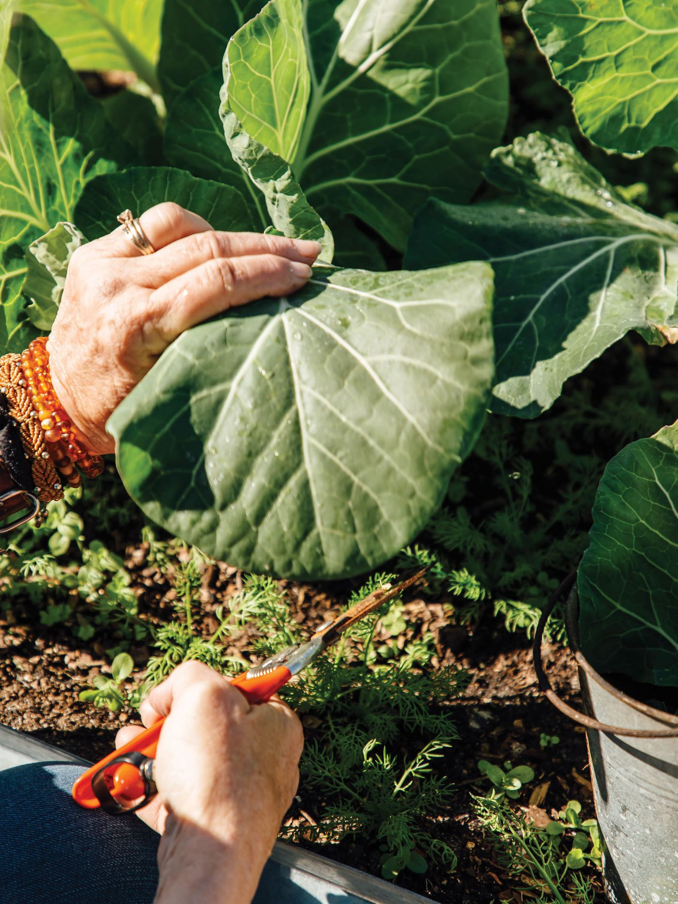
The entrance drive, the community kitchen and bakery, the greenhouse and high tunnels, the cabins in pods around two ponds, row crops, chicken and pig pastures, and an apiary. A concept plan, drawn in June 2026, that the Phase One list below funds piece by piece.
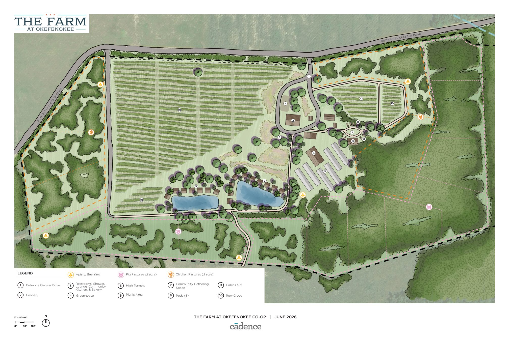
Twenty-four at a time, with structure, purpose, a paycheck, and the daily evidence of her own competence rising out of the ground in front of her. Trinity works alongside its residents.
Fresh protein and produce moving into meal programs that today have almost no access to either. The ambition: a million healthy meals a year, the scale at which Jacksonville's shelters and feeding ministries serve today, reaching Trinity Rescue Mission and shelters and feeding ministries across Jacksonville.
Better nourishment into shelters means better outcomes across every program those shelters run, for thousands of people who will never set foot on this farm.
The woman who spends a season here leaves with a trade, and she leaves having fed thousands of people who were, not long ago, exactly where she was.
“We don't see homelessness as a problem that a singular church should solve, and we don't even see it as a problem that just Christian people should solve. It's a challenge that will take our whole community to solve.”
Pastor Tom Messer, Trinity Baptist ChurchEach can be underwritten in full, in part, or shared among partners. Naming and recognition opportunities are available for each investment.

Exercise the option on the Petty Farm: 126 acres and 135 unbroken years of harvest. Everything that follows grows out of this.
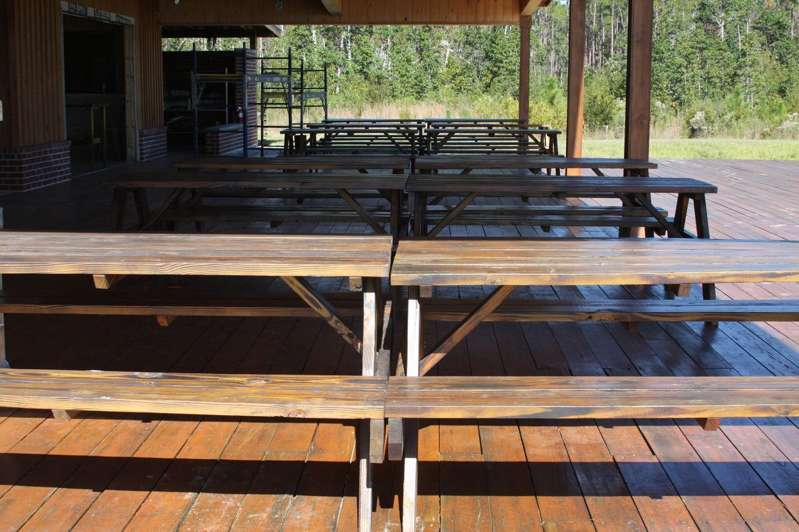
A conditioned steel building holding the community kitchen, restrooms, showers and gathering space; the table where 24 women sit down to eat what they grew, and the room where they learn the trade.
It must be built before the first woman moves into a cabin. Everything else waits on it.
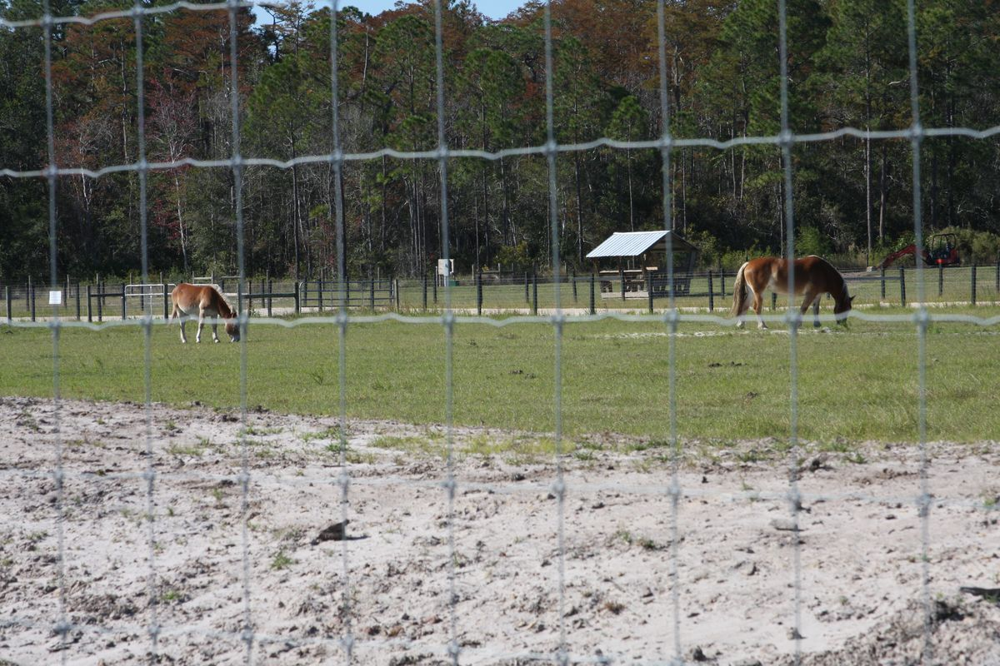
A 6-foot game fence enclosing the property, with gates and corner bracing, keeping deer and hogs out and livestock in. Inside it, cross fencing divides the land into paddocks for rotating the pigs and poultry, plus dedicated fencing for the garden, greenhouse and pig pastures, including the gates that make the daily paddock moves possible.
This fencing is the working machinery of regenerative agriculture: how the soil is rebuilt and where the protein comes from.
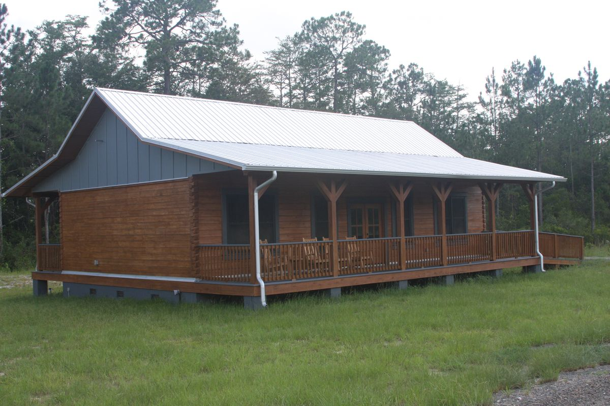
Each cabin sleeps two women. Twelve cabins house the full program.
For many of these women, it will be the first door in years that locks from the inside.
Individual cabins may be sponsored singly; a $30,000 gift houses two women.
“It's peaceful out here, and I would definitely live out here in a heartbeat.”
Nancy, Resident, Trinity Rescue Mission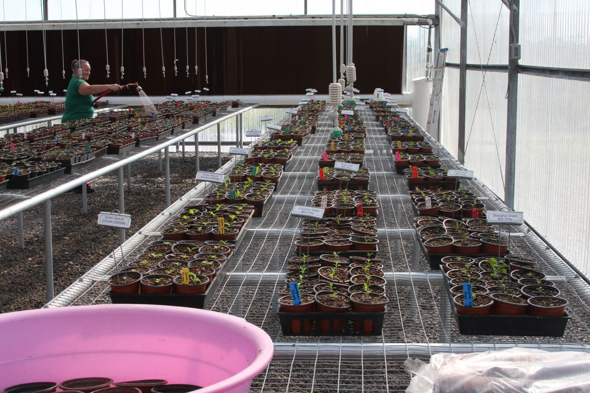
35' x 100' with trays, cooling and irrigation. Starts every plant from heirloom seed for the market gardens and the hoop houses. The farm can't run without it.
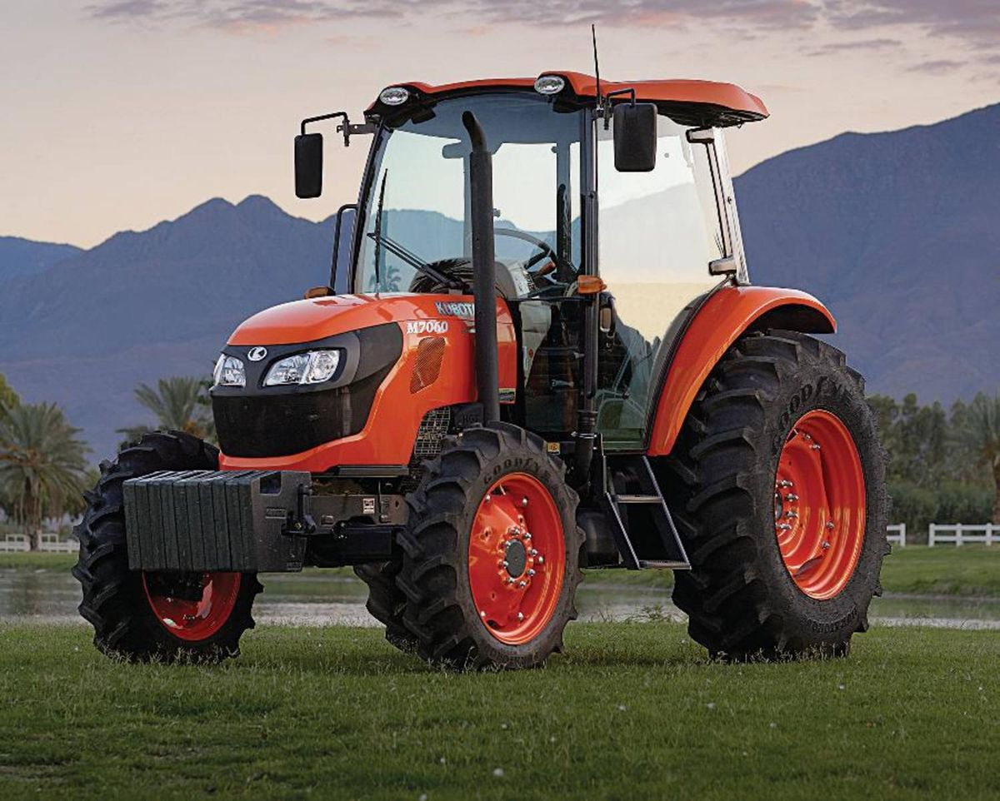
Utility tractor with front loader plus the attachments that make it useful: rotary mower, tiller, box blade, seeder and a utility trailer. Used for land work, feed handling and compost turning.
The six investments above total $2.46 million. The balance of Phase One funds the smaller items on the farm, the first year of operations, and a reserve for contingency.
“The ethos of what we do here at The Farm is really just this idea of restoration and improvement. Not only is the ground getting better every year, we're better at what we're doing. We're creating a stronger, more cohesive community. And, through this endeavor with Trinity Rescue Mission, we want to extend that for the benefit of the most vulnerable among us.”
Doug Davis, Co-Founder, The Farm at OkefenokeeDay-to-day farming draws on the existing team at The Farm at Okefenokee, the same people who have already grown 30,000 meals alongside these women.
The program itself is Trinity's. Trinity Rescue Mission will hire and employ a couple as the farm's resident managers: the two people who teach the trade, run the production, and hold the daily rhythm that makes recovery possible. Phase One funds their first year. The Farm brings the ground, the knowledge, and the infrastructure. Trinity brings the program, the staff, and 64 years of walking people from fear, helplessness and feeling stuck to safety, hope and support.
| Phase One | 2026 estimates |
|---|---|
| Capital: land, buildings, fencing, equipment, wells and site work | $2,968,200 |
| Operations, year one: wages, managers, feed, fuel, fertilizer and soil | $500,000 |
| Contingency | $319,300 |
| Additional items: livestock, tools, coops and small equipment | $212,500 |
| Phase One | $4,000,000 |
Pick the piece that fits. Gifts up to $22,000 can be made directly; for larger pieces, start a conversation and we'll set up the gift and the recognition together. Prices are 2026 estimates and may move as bids come in.
| Level | What it sponsors | Units available | |
|---|---|---|---|
| $1,000,000 | The land, 126 acres | 1 | Talk to us |
| $500,000 | Kitchen, dining and bathrooms | 1 | Talk to us |
| $360,000 | All 12 cabins | 1 | Talk to us |
| $300,000 | The fencing, perimeter and interior | 1 | Talk to us |
| $150,000 | The greenhouse | 1 | Talk to us |
| $150,000 | The tractor and implements | 1 | Talk to us |
| $150,000 | Farm managers, year one | 1 | Talk to us |
| $75,000 | The farm truck | 1 | Talk to us |
| $70,000 | Fertilizer, year one | 1 | Talk to us |
| $60,000 | The septic system and drain field | 1 | Talk to us |
| $50,000 | Wash, pack and cold storage | 1 | Talk to us |
| $40,000 | Land clearing and prep | 1 | Talk to us |
| $40,000 | Fuel, year one | 1 | Talk to us |
| $35,000 | 1 hoop house | 3 | Talk to us |
| $35,000 | Irrigation pumps and mainlines | 1 | Talk to us |
| $30,000 | 1 cabin, houses 2 women | 12 | Talk to us |
| $30,000 | Soil and compost, year one | 1 | Talk to us |
| $22,000 | The utility vehicle | 1 | Give |
| $20,000 | Electrical service and distribution | 1 | Give |
| $15,000 | 1 well, drilled, cased and pumped | 4 | Give |
| $10,000 | A 1-acre share of the land | 100 | Give |
| $4,000 | 1 bulk feed bin | 2 | Give |
| $3,000 | 1 acre under drip irrigation | 10 | Give |
| $2,500 | A quarter-acre share of the land | 400 | Give |
| $1,000 | 1 Meishan sow for the breeding program | 40 | Give |
| $800 | 1 pig feeder and waterer set | 4 | Give |
| $500 | Work clothing, apron and garden tools for 1 woman | 48 | Give |
| $500 | 1 roll-out laying box for up to 75 hens | 4 | Give |
| $100 | 12 baby chicks, to help establish a sustainable source of fresh eggs | 200 | Give |
Each one is a complete sponsorship at its listed price: the animals, tools and small equipment a working farm runs on. Together they are the $212,500 block of Phase One.
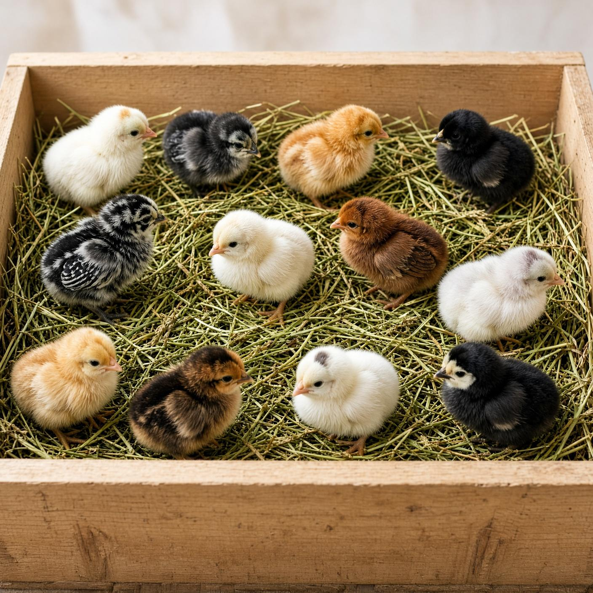
12 baby chicks, to help establish a sustainable source of fresh eggs for the TRM kitchen.
Give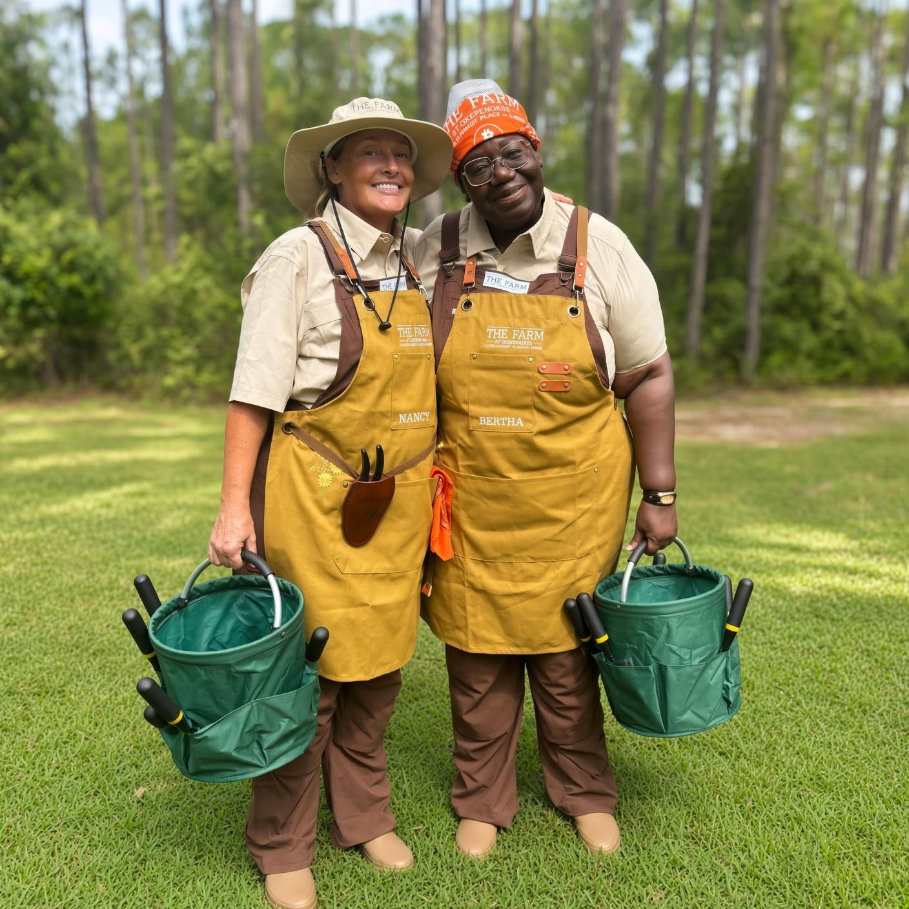
Work clothing, an apron, and the personal set of garden tools each woman works with daily.
Give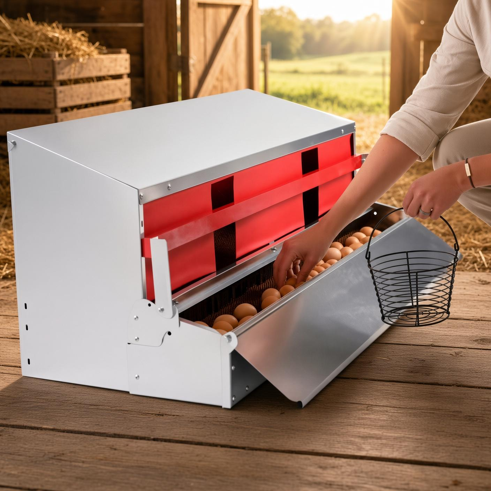
A roll-out nest box serving up to 75 hens. Eggs roll out of the birds' reach, so they stay clean and unbroken.
Give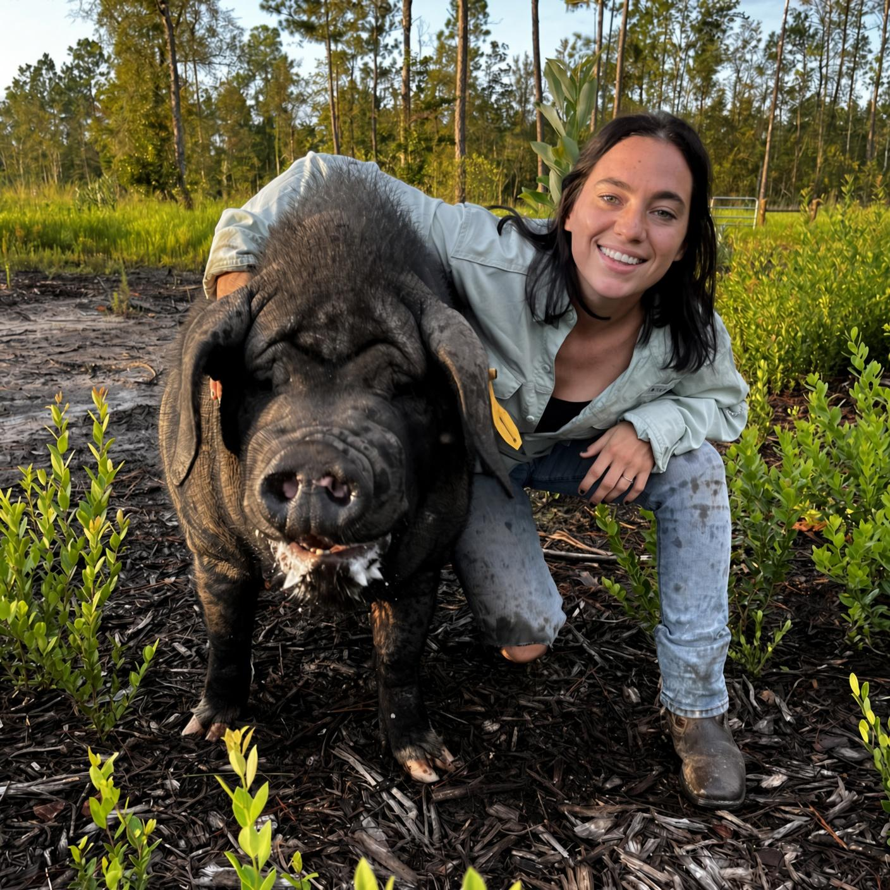
1 Meishan sow for the breeding program, transportation included. A calm heritage breed with large litters, sourced in Florida or Georgia.
Give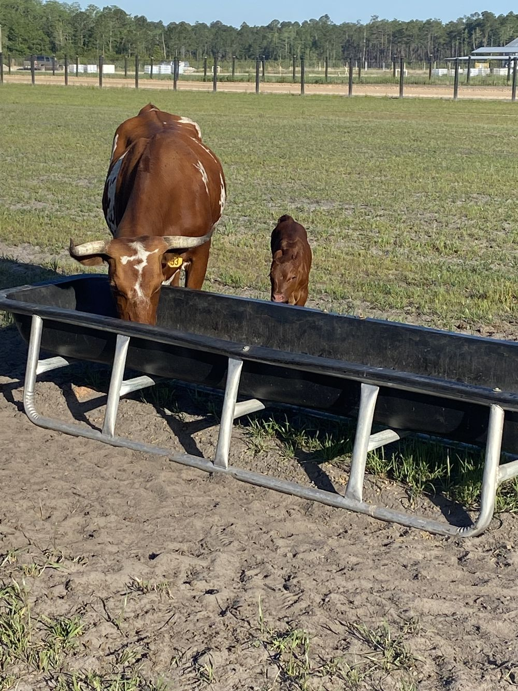
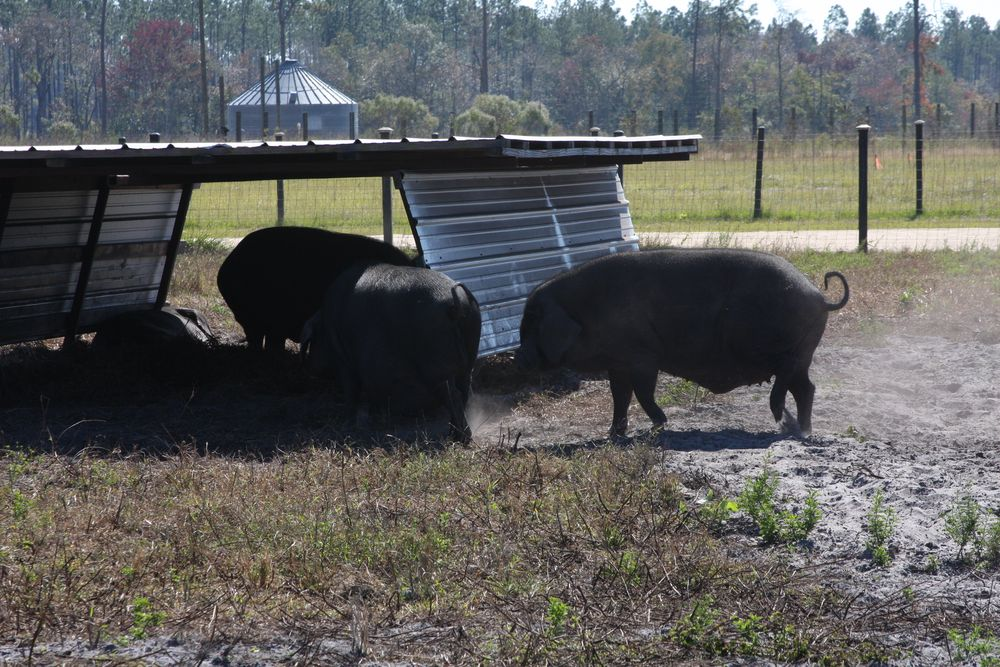
Weatherproof field housing, 2 for each pig pasture, including the pasture the sows move to before they give birth.
GiveA pasture-mobile coop housing 100 layers, moved daily behind the garden. The birds improve the pasture as they go. Flagged for the NRCS grant.
Give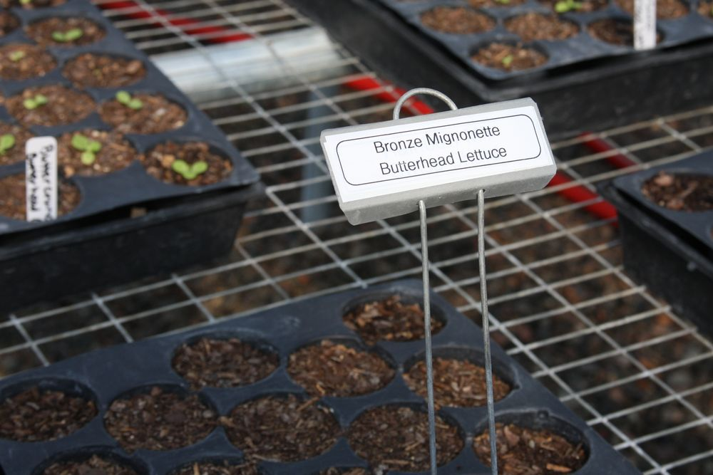
A full season of non-GMO heirloom seed. Expect this to grow about $2,500 a year as acreage comes online.
GiveShop tools, irrigation repair stock, and the small equipment a working farm consumes.
GivePrecision seeders, harvest tools, and bed-prep gear matching the pilot garden setup.
GiveThe BCS, the core market garden machine and the same one the women train on at the pilot. Comes with all the attachments the market garden runs today.
GiveThe Farm at Okefenokee is a 1,000+ acre regenerative farm in Folkston, Georgia, built on soil health, animal welfare and food grown the way food used to be grown. Its abundance already flows to Trinity. Jeff Meyer, co-founder, was born and raised in the farming community of Amana, Iowa, and has spent a lifetime working from the land. In the late 1980s, he joined American Forests on a campaign to plant 20 million trees across the continental United States; the last one went into the ground in New Mexico in 2002. In 1995, he located and authenticated the Algeo tree, the last surviving tree planted by John Chapman, better known as Johnny Appleseed, and acquired its genetic rights. Working with the Secretary of the Interior, he developed the nation's largest privately funded habitat conservation bank, 916,076 acres in Wyoming. He lives in Jacksonville.
“People can't understand how much food we can grow right here. We're growing a lot more than the people living here currently eat. That's one reason we teamed up with Trinity, so they can take the abundance.”
Jeff Meyer, Co-Founder, The Farm at OkefenokeeTrinity Rescue Mission is a faith-based nonprofit focused on ending the cycle of homelessness for men, women, and especially children across Northeast Florida. Established in 1962, Trinity focuses on root cause, long-term and sustainable solutions: second chances and real work, an individualized pathway of recovery, and walking beside people toward restoration. Trinity's residential programs have long met that need on the land. Freedom Farm, opened in St. Johns County in 1970, is the men's program this initiative extends to women.
Trinity Rescue Mission is an independent 501(c)(3) nonprofit (EIN 59-6152373), founded by the congregation and leadership of Trinity Baptist Church, which remains its key ministry partner.
trinityrescue.org ↗Help us plant a new beginning.
Follow our journey: From the Field, the pilot journal